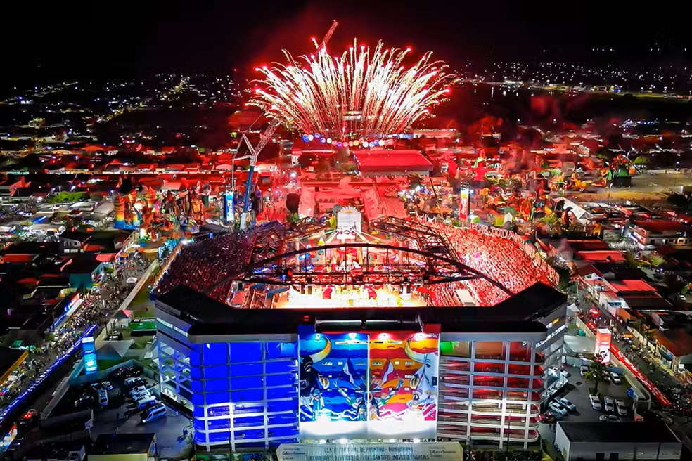

Festival Folclórico de Parintins: Uma Festa de Cores, Ritmos e Tradições
O Festival Folclórico de Parintins é um dos maiores espetáculos populares do Brasil, conhecido mundialmente por sua grandiosidade e tradição. Realizado anualmente na cidade de Parintins, no interior do Amazonas, o festival celebra a cultura local e a rivalidade entre os bois-bumbá Garantido (cor vermelha) e Caprichoso (cor azul).
O que é o boi-bumbá?
O boi-bumbá é uma manifestação cultural popular que representa a morte e ressurreição de um boi, encenada em forma de teatro popular. Durante o festival, os bois competem em um espetáculo que envolve música, dança, alegorias, toadas (canções típicas) e a participação de milhares de pessoas.
Como funciona a competição?
O Festival é dividido em três noites de apresentações, onde cada boi apresenta um tema central, explorando a cultura amazônica, a história local e a mitologia indígena. Um júri especializado avalia os diversos quesitos da apresentação, como a beleza das alegorias, a qualidade das toadas, a harmonia da apresentação e a criatividade dos temas.
O que torna o festival tão especial?
A força da tradição: o festival mantém viva a tradição do boi-bumbá, transmitida de geração em geração.
A rivalidade saudável: a disputa entre os bois gera uma energia contagiante e mobiliza toda a cidade.
A beleza das apresentações: as alegorias, as fantasias e as coreografias são verdadeiras obras de arte.
A força da música: as toadas são compostas especialmente para o festival e se tornam hinos populares.
A paixão dos torcedores: a torcida de cada boi é apaixonada e cria um ambiente vibrante no Bumbódromo.
O impacto do festival: o Festival Folclórico de Parintins é um importante motor econômico para a região, gerando empregos e renda. Além disso, ele promove a cultura amazonense e a integração entre as diferentes comunidades.
Em resumo:
O Festival Folclórico de Parintins é muito mais do que uma simples festa. É uma celebração da identidade cultural amazonense, um espetáculo que emociona e encanta a todos que o acompanham. Se você tiver a oportunidade de assistir a essa festa, não perca!